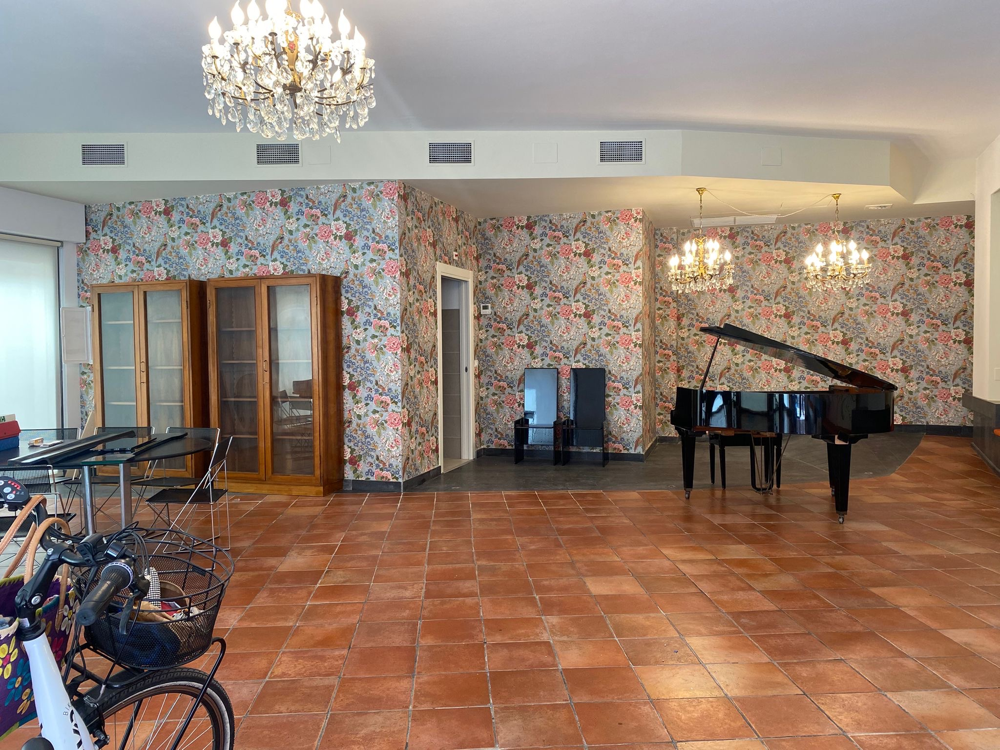
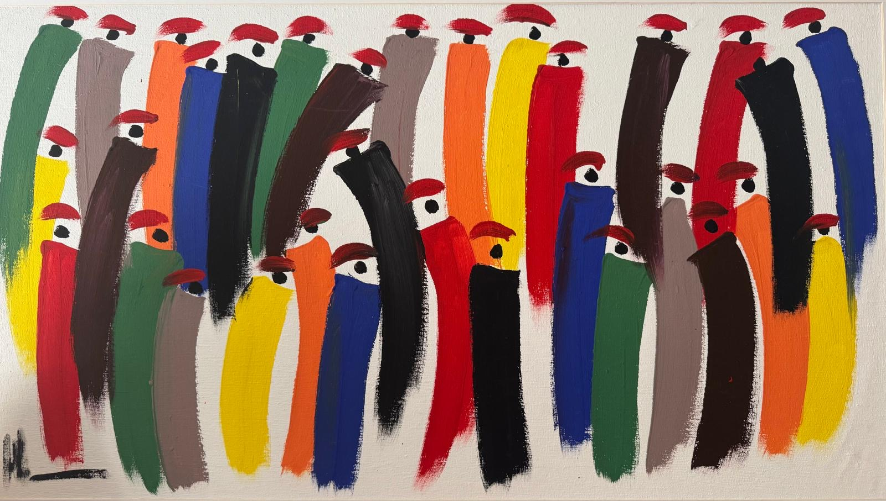
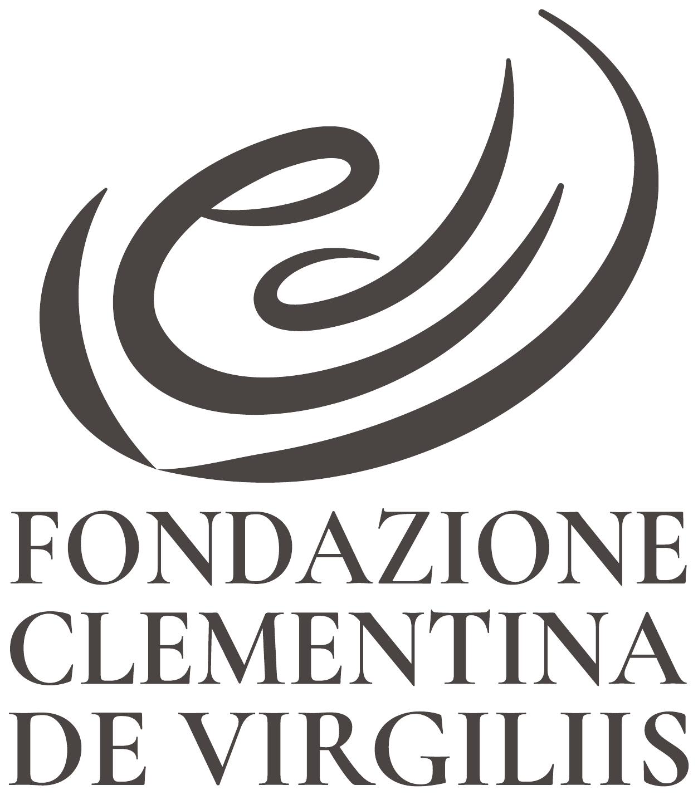
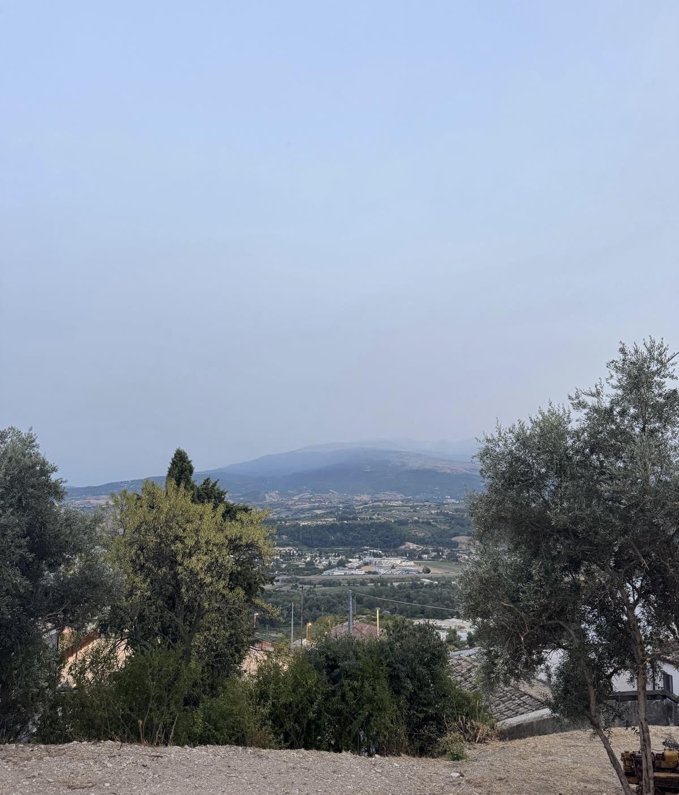

Sede centrale
Presso la nostra sede di Via delle Caserme, 69 a Pescara.
Scopri ›

Abruzzo
Lavoriamo contro l'isolamento. Servizi socio-sanitari, percorsi formativi, iniziative culturali: mettiamo in dialogo cura, educazione e cultura per creare contesti in cui ognuno possa sentirsi accolto.
1987
Anno di fondazione
2026
Iscritti al RUNTS come Ente del Terzo Settore
2
Sedi in Abruzzo
Cosa facciamo
Promozione di attività formative e informative rivolte a famiglie con persone bisognose di assistenza psicologica, agli operatori del settore sociosanitario, religioso e delle scienze psicopedagogiche, nonché agli insegnanti di scuole e istituti di ogni ordine e grado. Istituzione di borse di studio, anche in collaborazione con Enti e istituzioni aventi finalità analoghe, volte alla realizzazione e diffusione di pubblicazioni e materiali divulgativi.
Organizzazione di attività di accoglienza, intrattenimento, formazione e informazione rivolte a giovani e persone della terza età con problematiche di adattamento psico-sociale. Promozione di iniziative culturali e sociali mirate a favorire inclusione, benessere relazionale, partecipazione alla vita comunitaria e prevenzione del disagio, anche in collaborazione con realtà territoriali e istituzionali.
Realizzazione e/o gestione di strutture dedicate all'accoglienza e all'erogazione di prestazioni socio-assistenziali e socio-sanitarie per il recupero funzionale e sociale di persone con età superiore a 65 anni e di soggetti disabili non autosufficienti o a grave rischio di non autosufficienza, non assistibili a domicilio e bisognosi di trattamenti continuativi. Organizzazione di percorsi di riabilitazione e riattivazione psico-sociale, mediante l'applicazione di metodologie terapeutiche rivolte a persone con disturbi psicologici, finalizzati al reinserimento nella vita sociale.
Realizzazione di attività di studio e ricerca scientifica di particolare interesse sociale, direttamente oppure in collaborazione con Università, Enti di ricerca o altre Fondazioni, negli ambiti e secondo le modalità definite da apposito regolamento governativo ai sensi dell'art. 17 della Legge n. 400/1988. Diffusione dei risultati della ricerca attraverso iniziative editoriali, convegni e strumenti di divulgazione accessibili alla comunità.
Chi siamo
Siamo una fondazione abruzzese nata nel 1987 da un lascito testamentario. Dal 2026 siamo iscritti al RUNTS come Ente del Terzo Settore. Dal 2025 la Fondazione è guidata da un nuovo Consiglio di Amministrazione, chiamato a custodire il lascito e a farlo vivere nel presente.
Leggi chi siamo ›
Progetti
La nostra storia
Nasciamo nel 1987 dal lascito testamentario di Antonino De Virgiliis, portato avanti da don Giuseppe Natoli in nome della madre di lui, Clementina. Dal 2025 un nuovo Consiglio guida la Fondazione.
La nostra storia ›Trasparenza
Statuto, dati di costituzione e bilanci annuali: qui trovi i documenti che raccontano come siamo fatti e come usiamo le risorse che ci vengono affidate.
Vai alla pagina Trasparenza ›Sostienici
Con una firma nella dichiarazione dei redditi e il nostro codice fiscale, il tuo 5x1000 diventa vicinanza, cura e presenza.
Tutti i modi per sostenerciCodice fiscale da indicare
91011550687IBAN per il bonifico
IT20R0306915461100000012453